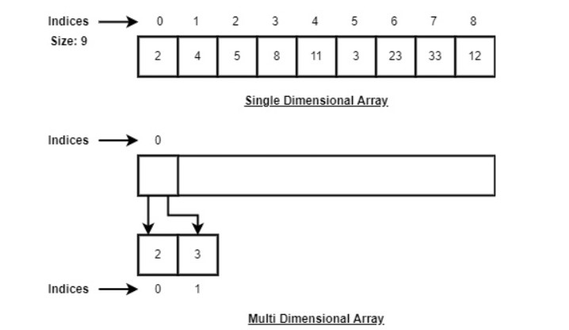
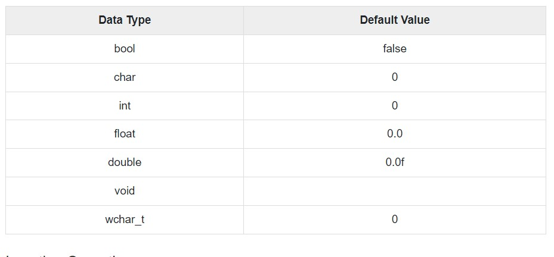

Array Data Structuress
Array is a type of linear data structure that is defined as a collection of elements with same or different data types. They exist in both single dimension and multiple dimensions. These data structures come into picture when there is a necessity to store multiple elements of similar nature together at one place.

The difference between an array index and a memory address is that the array index acts like a key value to label the elements in the array. However, a memory address is the starting address of free memory available.
Following are the important terms to understand the concept of Array.
- Element − Each item stored in an array is called an element.
- Index − Each location of an element in an array has a numerical index, which is used to identify the element.
Syntax
Creating an array in C and C++ programming languages −
data_type array_name[array_size] = {elements separated using commas}
or,
data_type array_name[array_size];
Creating an array in JAVA programming language −
data_type[] array_name = {elements separated by commas}
or,
data_type array_name = new data_type[array_size];
Need for Arrays
Arrays are used as solutions to many problems from the small sorting problems to more complex problems like travelling salesperson problem. There are many data structures other than arrays that provide efficient time and space complexity for these problems, so what makes using arrays better? The answer lies in the random access lookup time.
Arrays provide O(1) random access lookup time. That means, accessing the 1st index of the array and the 1000th index of the array will both take the same time. This is due to the fact that array comes with a pointer and an offset value. The pointer points to the right location of the memory and the offset value shows how far to look in the said memory.
array_name[index]
| |
Pointer Offset
Therefore, in an array with 6 elements, to access the 1st element, array is pointed towards the 0th index. Similarly, to access the 6th element, array is pointed towards the 5th index.
Array Representation
Arrays are represented as a collection of buckets where each bucket stores one element. These buckets are indexed from ‘0’ to ‘n-1’, where n is the size of that particular array. For example, an array with size 10 will have buckets indexed from 0 to 9.
This indexing will be similar for the multidimensional arrays as well. If it is a 2-dimensional array, it will have sub-buckets in each bucket. Then it will be indexed as array_name[m][n], where m and n are the sizes of each level in the array.

As per the above illustration, following are the important points to be considered.
- Index starts with 0.
- Array length is 9 which means it can store 9 elements.
- Each element can be accessed via its index. For example, we can fetch an element at index 6 as 23.
Basic Operations in the Arrays
The basic operations in the Arrays are insertion, deletion, searching, display, traverse, and update. These operations are usually performed to either modify the data in the array or to report the status of the array.
Following are the basic operations supported by an array.
- Traverse − all the array elements one by one.
- Insertion − Adds an element at the given index.
- Deletion − Deletes an element at the given index.
- Search − Searches an element using the given index or by the value.
- Update − Updates an element at the given index.
- Display − Displays the contents of the array.
In C, when an array is initialized with size, then it assigns defaults values to its elements in following order.
